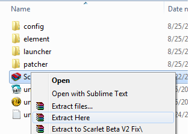

Daftar Isi Kitab
Welcome to the
Scarlet Perfect World Scarlet Private Server
About Perfect World Online
Perfect World (Chinese: 完美世界, adalah sebuah MMORPG yang dikembangkan oleh Beijing Perfect World. Permainan ini telah dirilis dalam beberapa versi di beberapa negara.)
Adalah permainan 3D MMORPG Online yang berdasarkan pada Mitologi Cina, yang berada pada sebuah dunia bernama Pangu.
Perfect World berfokus pada terbang, dan banyak struktur bangunan dan area yang melayang. Permainan ini mempunyai siklus siang-malam dan cerah ke hujan, membuat pemandangan yang berbeda pada area tertentu tergantung waktu.
Perfect World Scarlet
Perfect World Scarlet Adalah Perfect World Private Server yang mempunyai Gameplay yang unik dan Menarik. PVE Semi PVP Server dengan suasana yang keras. Disini player dituntut mempunyai mental baja dalam menjelajahi Dunia Scarlet, farming dan hunting terus menerus dibutuhkan untuk memperkuat Equipment Karakter dalam upaya menjadi yang terkuat.
Gameplay Features
Selain terkenal dengan Action Combat yang sangat bagus, Perfect World juga mempunyai Gameplay yang istimewa. Berikut Informasi tentang fitur-fitur yang ada di Perfect World Scarlet.
| General Information | ||||||||
|---|---|---|---|---|---|---|---|---|
| Server & Client Version | Update Evolution versi 1.5.0 | |||||||
| Latest Official Update | Update Reincarnation versi 1.5.1 | |||||||
| Server Time | UTC+8 / WITA (Waktu Indonesia Tengah) | |||||||
| Gameplay Based | ||||||||
| PvE | Ya | Semua Item didapat dari Farming dan hunting. | ||||||
| PvP | Ya | Karakter bisa langsung melakukan PK setelah mencapai level 30. | ||||||
| Server Rates | ||||||||
| Experiences | Medium | Spirits | Medium | Drop Items | Medium | Coins | Medium | |
| Opened Instances | ||||||||
| Eden | Malakh | |||||||
| Mommaganon / Hell | Lothranis / Heaven | |||||||
| Api Suci | Arcadia | |||||||
| Lunar Glade / Lembah bulan | Warsong City | |||||||
| Game Events | ||||||||
| Event | Teritorial War | Hari | Sabtu-Minggu | Waktu | 20:00-end (Server Time) | |||
| Event | Celestial Tiger | Hari | Setiap Hari | Waktu | 21:00-end (Server Time) | |||
| Event | Nations War | Hari | Jumat & Minggu | Waktu | 20:00-22:00 (Server Time) | |||
| Server / Game Service & Economy | ||||||||
| Ingame Gold | Ya | Jual-Beli Item Penting di NPC, Jual-Beli antar player. | ||||||
| Pelelangan | Ya | Game Lelang Otomatis, Jual-Beli antar player. | ||||||
| Mail Service | Ya | Kirim Item antar Player / Server ke Player. | ||||||
| Item Mall | Ya | Beli Item Penting dengan menggunakan Cubi Gold / Cubi Sawer. | ||||||
| Cubi Gold / Cubi Sawer | Ya | Beli Item Penting di Scarlet Item Mall, didapat dengan Donasi (sawer). | ||||||
| Event Mall | Ya | Beli Item Penting dengan menggunakan Event Gold. | ||||||
| Event Gold | Ya | Beli Item Penting di Scarlet Event Mall, didapat dengan Quest DPU / Farming. | ||||||
| Donasi / Sawer | Ya | Untuk mendapatkan Cubi Gold, mempercepat mendapatkan Item-item Penting. | ||||||
| Another Scarlet's Great Gameplay-Features | ||||||||
| Friendly GMs | Para GM yang Ramah, Lucu dan Menggemaskan. | |||||||
| Huge & Fun Communities | Komunitas yang besar dan menyenangkan. | |||||||
| GM's Events | Event yang di-Host oleh GM Event. | |||||||
| Custom Quests | Quest Kustom untuk gameplay yang menarik. | |||||||
| Instant Cultivation | Wibawa Instan Mahayana. | |||||||
| Instant 3rd Fairy | Langsung mencapai Wibawa Demon/Sage (Peri ke-3) ketika menyelesaikan Quest Wibawa Peri ke-2. | |||||||
| Instant 200k Reputation Points | Mendapatkan 200.000 Poin Reputasi ketika membuat Karakter. | |||||||
| Main-Characters Farming | Untuk mendapatkan Item/Gear untuk karaktermu, kamu harus berjuang dengan Karakter Utama-mu. | |||||||
| World-Bosses & Custom World-Bosses | World Bos dengan Drop Item Penting didalam game. | |||||||
| Standart Equipment | Equipment standart official. | |||||||
| Pet Evolutions | Job Foxlady dapat meng-Evolusi Battle Pet mereka sehingga menjadi lebih Kuat. | |||||||
| Scarlet Engraving Service | Engraving Service untuk semua Gear part. | |||||||
| Scarlet Gear Conversion Service | Sistem pertukaran antar Gear yang Setara. | |||||||
| Change-NickName: enabled | Kamu bisa mengganti Nama Karaktermu. | |||||||
Installing the Game
Exact Perfect World Client to Play
Klien yang bisa anda Gunakan adalah Client dari Perfect World Indonesia Update Evolution.
Downloading the Game Patches
Untuk bisa bermain di Server Scarlet anda memerlukan Patch dari kami. Manual Patch bisa didownload di :
Installing the Patches (for the DUMMIES)
Berikut adalah tatacara Install patch secara manual :
Download Manual Patch dan Save disembarang tempat.
Setelah Download Selesai, Buka Folder download, Copy Patch dan paste di Folder Client PW Kamu.
-
Extracting Methode:
Ekstrak Patch dengan WinRar
Klik kanan pada Patch, pilih Winrar pada Context-Menu, Pilih Extract Here.

Pilih Yess to All apabila ada Menu Confirm Replace.
Jika kamu benar maka akan muncul seperti dibawah:
Tunggu sampai Proses Ekstraksi Selesai.
DONE !!
Ekstrak Patch dengan 7Zip
Klik kanan pada Patch, pilih 7zip pada Context-Menu, Pilih Extract Here.
Pilih Yess to All apabila ada Menu Confirm Replace.
Jika kamu benar maka akan muncul seperti dibawah:
Tunggu sampai Proses Ekstraksi Selesai.
DONE !!
Installing patch selesai !!
Launching / Start the Game
Setelah Installasi patch Selesai, Buka Folder "element" didalam Folder Perfect World Kamu. Dobel Klik "elementclient.exe" yang ada di folder tersebut.
Jika Installasi Patch benar, maka Game akan tampak seperti dibawah ini :
Terdapat ping pada Server List.Next, Silahkan masukkan Username dan Password anda dengan benar.
Newcomers (a.k.a Newbie) Guide
Creating Characters
Setelah anda Login ke-Game, Silahkan bikin karakter yang sesuai. terdapat 5 Class dan 10 job untuk dipilih. Berhati-hatilah dalam memilih Class dan Job Karakter yang akan kamu buat, karena setiap Class dan Job memiliki Spesialisasi, Kelebihan, dan Kekurangan yang berbeda. Karena di Dunia Scarlet, anda dituntut untuk mempunyai Skill lebih dalam memainkan Karakter Class dan Job.
INFORMASI CHARACTER CLASS dan JOB
| CLASS | JOB | Informasi | Kelebihan | Kekurangan |
|---|---|---|---|---|
| Manusia |
WARRIOR
|
Warrior adalah tipe petarung jarak dekat yang dapat bertarung dengan atau tanpa menggunakan senjata. Mereka sangat tangkas dan cepat dalam menyerang dan menghindar. Mereka merupakan ahli dari segala jenis ilmu pertarungan. Senjata : Pedang, Tombak, Kapak, Pisau, Fist dan Cakar. |
|
|
|
MAGE
|
Mage adalah ahli dari ilmu sihir, mage dapat mengendalikan elemen api, air dan tanah untuk keuntungan mereka. Untuk memaksimalkan elemen mereka, mage membutuhkan meditasi mistik agar dapat efektif dalam menyerang. Dalam status ini, kemampuan bertahan dari mage akan berkurang drastis, tetapi ketika selesai bermeditasi mereka dapat melakukan damage magic jarak jauh yang sangat besar ke musuh. Senjata : Wand, Wheel, Staff, Magic Sword |
|
|
|
| Peri |
ARCHER
|
Archer diberkati dengan sayap semenjak lahir, sangat hebat dalam serangan jarak jauh. Archer merupakan pelindung dari bangsa Peri. Mereka menggunakan pakaian dan senjata dari bahan yang ringan untuk bertahan dari musuh. Senjata : Bow, CrossBow, Slingshot |
|
|
|
PRIEST
|
Priest merupakan gabungan yang sama seperti archer, priest juga dapat terbang. Mereka dapat menyembuhkan, memberikan kutukan dan dapat memanggil elemen tanah dan angin. Mereka hebat apabila bergabung dengan pemain yang bertipe serangan dekat karena dapat men-support mereka dan mereka membutuhkan sosok kuat karena mereka mempunyai tubuh yang lemah. Senjata : Wand, Wheel, Staff, Magic Sword |
|
|
|
| Siluman |

BESTIAL
|
Bestial adalah mahluk yang dikeluarkan dari dalam tanah, yang sudah bermetamorphosis selama ratusan tahun sehingga mirip dengan manusia umumnya. Bestial adalah mahluk kuat yang bertarung paling depan di medan perang. Kekuatannya yang besar menjadi kemampuan utama mereka dalam pertarungan dengan musuh dalam jarak dekat. Dalam pertarungan, Bestial dapat memanggil binatang buas dalam diri mereka dan merubah dirinya menjadi binatang buas tersebut dengan kekuatan diatas manusia normal. Senjata : Kapak dan Palu |
|
|
|
FOXLADY
|
Foxlady juga merupakan mahluk seperti bestial, bedanya jika bestial sangat ganas, fox lebih gesit dan menarik yang dapat mengecoh lawannya. Foxlady seperti ular, karena sangat ahli dalam penggunaan racun, disamping itu Foxlady dapat menangkap binatang untuk membantu dalam pertarungan. Setiap pet yang telah ditangkap memiliki atribut dan skill masing-masing, yang dapat meningkatkan efek serangan yang ditimbulkannya. Foxlady juga dapat berubah menjadi seekor rubah yang berguna untuk serangan yang lebih kuat dan pertahanan yang lebih baik. Senjata : Wand, Wheel, Staff, Magic Sword |
|
|
|
| Duyung |
ASSASIN
|
Assasin adalah job yang memfokuskan diri pada penyelundupan. Keistimewaan dari Assassin adalah skill menghilang (Stealth), yang dapat digunakan ketika kabur dan menyerang target secara tiba-tiba ataupun menyelundup ke benteng lawan dalam Territorial War untuk mengumpulkan informasi tanpa diketahui. Senjata : Dagger |
|
|
|
PSYCHIC
|
Psychic dalah job yang memfokuskan diri pada kekuatan Magic yang fleksibel karena mereka dapat merubah Status Buff mereka menjadi Attacker Utama atau menjadi Tanker dengan Skill Voodoonya. Senjata : Soulsphere |
|
|
|
| Dewa |
SEEKER
|
Seeker adalah job yang berada di garis depan pertempuran. Begitu banyak pertarungan yang terjadi sehinga kemampuan tempur terlatih bukan untuk pengembangan diri, melainkan kebutuhan. Senjata : Pedang |
|
|

MYSTIC
|
Mystic adalah job yang memiliki kemampuan untuk berkomunikasi dan memanggil makhluk spiritual sebagai pelindungnya. Mystic juga memiliki kekuatan penyembuh, sebagai support untuk Party. Senjata : Tangan kosong, Senjata magic |
|
|
Login Into Scarlet World
FAQ Frequently Asked Questions
Tanya
Saya sudah membuat karakter dan Berhasil login, apa yang harus saya lakukan selanjutnya?
Jawab
Tengok Ikon tas di pojok kanan bawah (Tombol cepat: Tekan "B"), maka kamu akan melihat Newbie Set : (Job) Pack didalam tasmu.
Tanya
Ya! saya melihatnya. Selanjutnya bagaimana ?
Jawab
Klik Kanan Newbie Set : (Job) Pack tersebut, maka kamu akan mendapatkan Starter Items.
Setiap Karakter yang baru dibuat akan mendapatkan bekal untuk Leveling dan hunting berupa :
Pergunakanlah Newbie Gift dengan Seksama.
Leveling Up
FAQ Frequently Asked Questions
Question
Saya masih level 1, dimanakah tempat leveling yang cepat ?
Answer
Kamu bisa memukul Semua Monster disekitar tempat kamu pertama dilahirkan. Maka Level-mu akan Naik dengan Pesat.
Question
WOW...saya sudah mencapai Level 100++, tapi Sudah semakin susah untuk naik level lagi. Dimana lagi saya harus menaikkan Level ?
Answer
Selanjutnya, Pergilah ke Kota Seribu Misteri. temui NPC Dinas Pekerjaan Umum didekat NPC Sesepuh Kota Seribu Misteri. Ambil Quest dari NPC tersebut, dan Pergilah ke Koordinat dimana kamu diminta untuk membunuh 20 ekor Monster.
Semua Monster di Dunia Scarlet mempunyai Level 150, dengan begitu kamu bisa menaikkan level karakter kamu dengan membunuh monster dimanapun karaktermu berada. Dengan Starter Armor yang diberikan saat karakter baru terbuat, maka kamu akan mudah menaikkan levelmu dengan sangat cepat.
Meskipun Begitu, dalam Dunia Scarlet terdapat Spot Monster yang mempunyai Exp. yang sangat tinggi.
Hints !
- Untuk memperbesar Exp. yang didapat, kamu bisa menggunakan HyperExp Stone atau dengan menggunakan Training Estorica Ticket, bisa juga dengan mengombinasikan keduanya.
- HyperExp Stone Bisa didapat dengan menukar Perfect·Token of Luck x8 di NPC Scarlet Special Manager atau dengan Celestial Shards x7 di Kotak Post.
- Training Estorica Ticket bisa dibeli di NPC UD. Scarlet [Toserba] di Kota Naga Barat.
Hunting & Farming Spot
Perfect World Scarlet Adalah PVE Semi PVP Based Gameplay dengan suasana yang keras. Yang berarti player dituntut mempunyai mental baja dalam menjelajahi Dunia Scarlet, farming dan hunting terus menerus dibutuhkan untuk memperkuat Equipment Karakter dalam upaya menjadi yang terkuat. ditambah dengan ekonomi game yang berjalan, tentunya kamu akan menjadikan Hunting dan Farming sebagai Aktifitas Utamamu disamping PvP / War.
Gold Farming
Dengan berjalannya Ekonomi didalam game, maka Gold sangat dibutuhkan. Gold farming dapat dilakukan dengan hunting diseluruh Map Dunia Scarlet, semua monster yang ada akan drop Gold apabila berhasil dibunuh.
Kamu bisa melakukan Hunting sekaligus Farming di Spot dimana monster diatas level 90 (Official) yang mempunyai Drop Rate Gold yang cukup tinggi. dan apabila kamu sudah melakukan Quest Wibawa Peri ke-1, maka kamu bisa melakukan Hunting dan farming Gold di dalam Hell / Heaven.
Farming Gold juga bisa dilakukan dengan mengambil Drop berupa bahan yang diperlukan untuk Dragon Quest Fu Zhi (91) dari monster diatas level 90 (Official) diseluruh Map Dunia Scarlet, terutama didalam Hell / Heaven atau Monster didalam Dungeon. Kemudian menjualnya ke NPC dengan harga Tinggi.
Berikut Item yang bisa kamu Pick dan Jual dengan harga tinggi
| Icon | Item Name | Sell Price |
|---|---|---|
| Hades Residence Treasure | 3160 gold |
|
| Yellow-Spring Water | 3160 gold |
|
| Elemental Glow | 3160 gold |
|
 |
Shapechanging Elixir | 3160 gold |
| Five Deadly Venoms | 3160 gold |
|
| Ginseng Fruit | 25500 gold |
Hints !
Jika kamu beruntung, SCARLET SNOWMAN EVENT akan di Host oleh yang sedang Online.
SCARLET SNOWMAN EVENT adalah event dimana hujan salju terjadi dan Boneka Salju muncul di 4 Kota Besar di Dunia Scarlet ( Kota Pedang, Kota Siluman Legenda, Kota Peri dan Kota Naga). Hit Snowman tersebut, maka akan Drop Gold dalam Jumlah yang besar.
Items Farming
As PvE Based Gameplay, kamu akan banyak menghabiskan waktu untuk mencari item-item penting, baik yang digunakan untuk Crafting, Refining, Engraving, Upgrading, dsb. Banyak Spot yang tersedia untuk mencari item-item penting didalam petualanganmu dan sebagai bekal PvP / War nantinya.
Craft / Apotechary Materials
Farming Material bisa dilakukan dibeberapa tempat, sesuai item yang kamu butuhkan. seperti (klik untuk melihat) :
Semua Grade, dari Basic sampai High Grade Crafting Material sudah tersedia di NPC UD. Scarlet [Mats Dasar] di Kota Naga Utara ( Tempat Tungku Crafting HH, sebelah kanan Petapa Abadi ). Semua material sudah tersedia lengkap dijual oleh NPC ini. Anda tidak perlu lagi Hunting dan Farming Item tersebut. cukup dengan melakukan Farming Gold.
Material HH-60 sampai dengan HH-90 sudah tersedia di NPC UD. Scarlet [Material HH] di Kota Naga Utara ( Tempat Tungku Crafting HH, sebelah kiri Petapa Abadi). Semua material HH (kecuali HH-99 dan HH-100) sudah tersedia lengkap dijual oleh NPC ini. Anda tidak perlu lagi Hunting dan Farming Item tersebut kedalam Twillight Temple Dungeon. cukup dengan melakukan Farming Gold.
Sedangkan untuk HH-99 dan HH-100, kalian bisa membelinya di Scarlet Event Shop dengan menggunakan Event Gold.
Klik tombol berikut, untuk guide mendapatkan Event Gold

Material Lunar Glade Juga sudah tersedia, kalian bisa membelinya di Scarlet Event Shop dengan menggunakan Event Gold.
Klik tombol berikut, untuk guide mendapatkan Event Gold
Material Drop dari Boss Nirvana Palace Juga sudah tersedia, kalian bisa membelinya di Scarlet Event Shop dengan menggunakan Event Gold.
Klik tombol berikut, untuk guide mendapatkan Event Gold

Ketika Karakter baru dibuat, kamu sudah mendapatkan Poin Reputasi sebesar 200k yang berarti kamu sudah mencapai Rank 8. Rank 8 Equipment bisa diambil di Petugas Ranking di kota Seribu Misteri. Upgrading Rank 8 menjadi :Sol atau :Eon membutuh beberapa Jenis bahan yang bisa kalian beli di Scarlet Event Shop dengan menggunakan Event Gold.
Klik tombol berikut, untuk guide mendapatkan Event Gold
Ketika kalian sudah berjuang mendapatkan Poin Reputasi menjadi sebesar 300k yang berarti kamu sudah mencapai Rank 9. Rank 9 Equipment bisa diambil di Petugas Ranking di kota Seribu Misteri dengan menyerahkan beberapa Item. Upgrading Rank 9 menjadi Rank 9 Grade 3 membutuhkan beberapa Jenis bahan yang bisa kalian beli di Scarlet Event Shop dengan menggunakan Event Gold.
Klik tombol berikut, untuk guide mendapatkan Event Gold